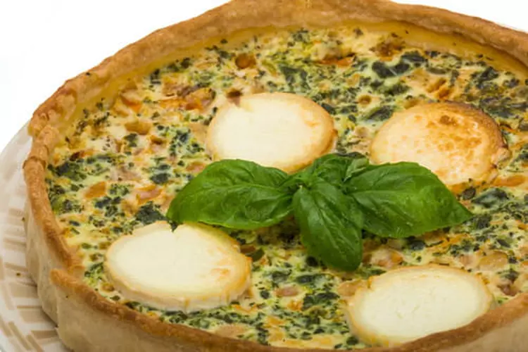

Tarte au Chèvre-Petits Pois à la menthe fraîche

Quoi de mieux après une journée d'été qu'une petite tarte au chèvre avec un verre de rosé
Laisser vous emporter par la fraicheur de la menthe et le goût subtil du fromage
préparation :25min
cuisson :40 min
Pour 6 personnes vous aurez besoins de :
- 1 rouleau de pâte brisée
- 1 oignon fane
- 5 brins de menthe
- 250g de petits pois surgelés
- 1 chèvre frais (environ 150g)
- 5 oeufs
40cl de crème fraiche
sel et poivre
Voici ensuite les quelques étapes de préparation :
- Préchauffez le four à 210°C. Versez les petits pois surgelés dans un saladier et recouvrez-les généreusement d'eau chaud. Laissez tremper.
- Déroulez la pâte et rtapissez-en un moule à tarte. Otez l'excédent de pâte et piquez le fond à la fourchette. Réservez le moule au congélateur
- Mixez les oeufs avec la crème, le blanc de l'oignon épluché, du sel et du poivre. Ajoutez le chèvre émietté grossièrement, le vert de l'oignon découpé en petits tronçons et les feuilles de 4 brins de menthe. Mixez encore en une dizaine de courte impulsions pour concasser les ingrédients
- Egouttez bien les petits pois et mélangez-les avec la préparation aux oeufs. Versez sur la pâte sortie du congélateur. Enfournez et laissez cuire pendant 15 min. Puis réduisez la température à 180°C et poursuivez la cuisson encore 25min
- Parsemez la tarte du reste de menthe et servez-la chaude ou tiède.
Et Voilà, Régalez-vous !
Votre Tarte au Chèvre-Petits Pois à la menthe fraîche est prête !